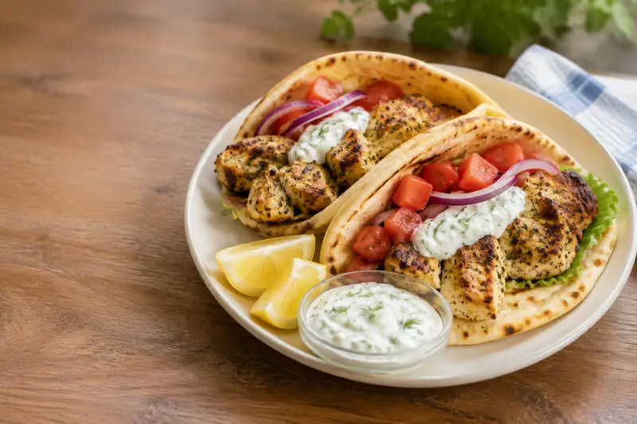

Vegetables蔬菜
Tomatoes西红柿
seen on costco.ca or in the Surrey warehouse listingCostco 目录/仓库可见
At Costco在 Costco
Typical pack常见规格: Tomatoes on the vine, 1.36 kg藤蔓番茄，1.36 公斤
Price varies; check the warehouse or costco.ca.价格随时变化，请看仓库或 costco.ca。
Sample date取样日期 2026-11-16. Availability varies by warehouse and season; this is not a stock guarantee.有无因门店和季节而异，不是库存保证。
Store and portion储存与分装
Ripen unripe ones at room temperature, then refrigerate ripe ones; bring to room temperature before eating; about 5-7 days.没熟透的放常温，熟透的放冷藏，吃前回温口感更好；通常 5–7 天。
Blanch, peel and chop some for the freezer; it is handy for scrambled eggs and stews.大盒番茄，一部分烫皮切块冷冻，做炒蛋或炖菜很方便。
Per 100 g (Canadian Nutrient File)每 100 克（加拿大营养素数据库）
Tomato, red, ripe, raw, year round average · code 2460
18 kcal · protein蛋白 0.88 g · fat脂肪 0.2 g · carbs碳水 3.89 g · fibre纤维 1.2 g · sodium钠 5 mg
No priority allergen.无重点过敏原。
Recipes with this用到它的菜
 Braised Beef Noodle Soup红烧牛肉面140 min分钟 · 4 servings份 · Chinese home-style家常
Braised Beef Noodle Soup红烧牛肉面140 min分钟 · 4 servings份 · Chinese home-style家常 Harbin-style Borscht with Beef and Cabbage罗宋汤（哈尔滨红汤）120 min分钟 · 6 servings份 · Northeastern Chinese东北
Harbin-style Borscht with Beef and Cabbage罗宋汤（哈尔滨红汤）120 min分钟 · 6 servings份 · Northeastern Chinese东北
Greek Chicken Souvlaki with Tzatziki希腊柠檬烤鸡串配酸奶黄瓜酱65 min分钟 · 4 servings份 · Greek / Mediterranean希腊/地中海Xinjiang Big Plate Chicken大盘鸡90 min分钟 · 4 servings份 · Northwestern / Xinjiang西北/新疆Northeastern Mixed Vegetable Stew东北乱炖95 min分钟 · 4 servings份 · Northeastern Chinese东北Tomato Egg Drop Soup番茄蛋花汤17 min分钟 · 2 servings份 · Chinese home-style家常 Tomato Fish Soup番茄鱼片汤30 min分钟 · 4 servings份 · Chinese home-style家常Greek Salad希腊沙拉20 min分钟 · 4 servings份 · Greek / Mediterranean希腊/地中海
Tomato Fish Soup番茄鱼片汤30 min分钟 · 4 servings份 · Chinese home-style家常Greek Salad希腊沙拉20 min分钟 · 4 servings份 · Greek / Mediterranean希腊/地中海 Beef and Potato Stew土豆炖牛肉120 min分钟 · 4 servings份 · Northeastern Chinese东北Ratatouille普罗旺斯炖菜80 min分钟 · 4 servings份 · French法Guizhou Sour Soup Fish酸汤鱼35 min分钟 · 3 servings份 · Yunnan / Guizhou云贵Taiwanese Beef Noodle Soup台湾红烧牛肉面195 min分钟 · 4 servings份 · Fujian / Taiwanese闽台
Beef and Potato Stew土豆炖牛肉120 min分钟 · 4 servings份 · Northeastern Chinese东北Ratatouille普罗旺斯炖菜80 min分钟 · 4 servings份 · French法Guizhou Sour Soup Fish酸汤鱼35 min分钟 · 3 servings份 · Yunnan / Guizhou云贵Taiwanese Beef Noodle Soup台湾红烧牛肉面195 min分钟 · 4 servings份 · Fujian / Taiwanese闽台 Tomato Beef Brisket Soup西红柿牛腩汤140 min分钟 · 4 servings份 · Chinese home-style家常
Tomato Beef Brisket Soup西红柿牛腩汤140 min分钟 · 4 servings份 · Chinese home-style家常 Tomato and Egg Noodles西红柿鸡蛋打卤面30 min分钟 · 3 servings份 · Chinese home-style家常
Tomato and Egg Noodles西红柿鸡蛋打卤面30 min分钟 · 3 servings份 · Chinese home-style家常 Tomato and Egg Stir-fry番茄炒蛋18 min分钟 · 2 servings份 · Chinese home-style家常Tomato Beef Brisket Noodles番茄牛腩面115 min分钟 · 4 servings份 · Chinese home-style家常
Tomato and Egg Stir-fry番茄炒蛋18 min分钟 · 2 servings份 · Chinese home-style家常Tomato Beef Brisket Noodles番茄牛腩面115 min分钟 · 4 servings份 · Chinese home-style家常